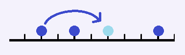
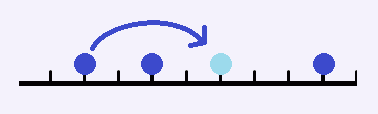

跳跳棋是在一条数轴上进行的。棋子只能摆在整点上。每个点不能摆超过一个棋子。我们用跳跳棋来做一个简单的
游戏：棋盘上有3颗棋子，分别在a，b，c这三个位置。我们要通过最少的跳动把他们的位置移动成x，y，z。（棋
子是没有区别的）跳动的规则很简单，任意选一颗棋子，对一颗中轴棋子跳动。跳动后两颗棋子距离不变。一次只
允许跳过1颗棋子。

写一个程序，首先判断是否可以完成任务。如果可以，输出最少需要的跳动次数。
| F.A.Qs | Home | Discuss | ProblemSet | Status | Ranklist | Contest | 入门OJ | ModifyUser Xeonacid | Logout | 捐赠本站 |
|---|

写一个程序，首先判断是否可以完成任务。如果可以，输出最少需要的跳动次数。
如果无解，输出一行NO。如果可以到达，第一行输出YES，第二行输出最少步数。